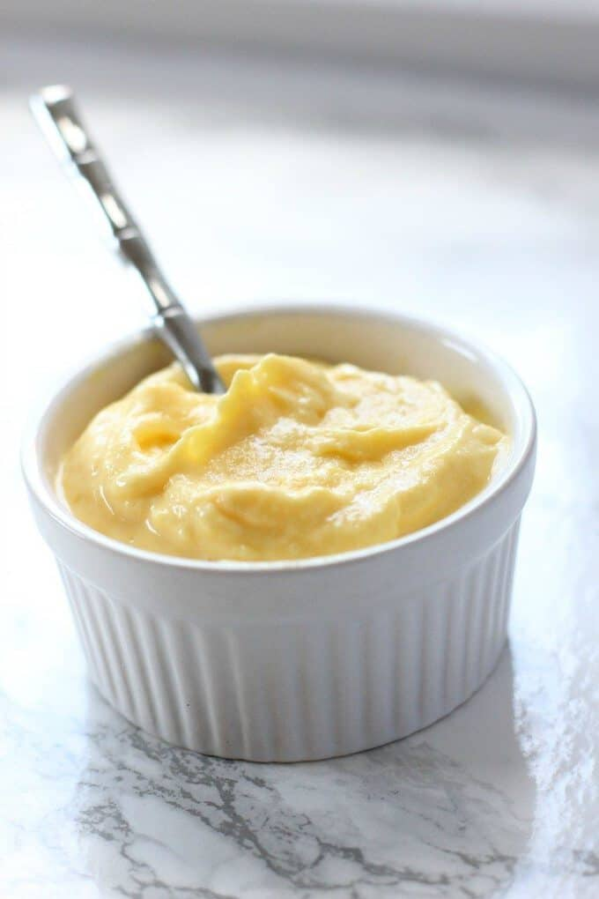

Froyo Recipe

Description
This two ingredient mango froyo is healthy and easy to make!
This recipe is NOT an original recipe and is simply repeating information from this website.
Ingredients
- 1 cup plain Greek yogurt
- 1 cup frozen mango
Instructions
- Place the Greek yogurt and mango in a blender and blend until smooth.
- Serve immediately or freeze for 10-15 minutes before enjoying.